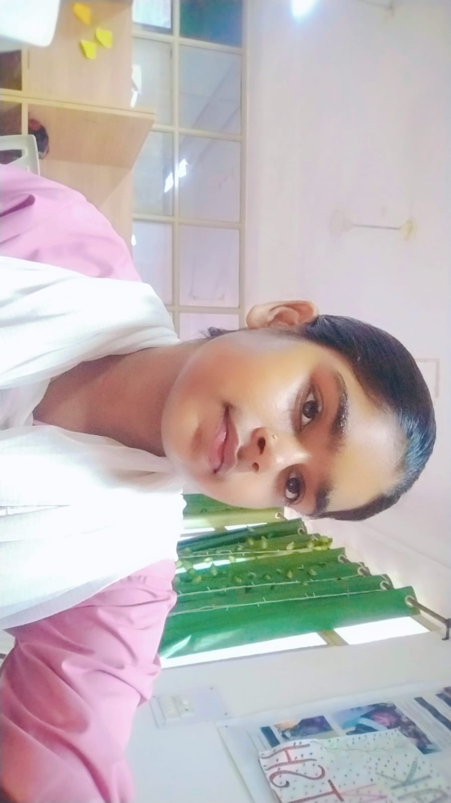

Student Photo

Personal Details
- Name:Rajrani Sharma
- Date of Birth:july 22 2009
- Gender:Female
- Roll Number:STU-2026-001
- Program:Bachelor of Computer Applications
- Year:First Year
Skills
- HTML5 and Semantic markup
- CSS3 Fundamentals
- JavaScript Basics
- Python Programming
- Database Management (SQL)
- Problem Solving
Hobbies
- Reading Books
- Playing Chess
- Cricket
- Photography
- Coding side projects
Career Goals
My primary career goal is to become a Full-stack web developer and eventually transition into a software architect role. I aim to work on impactful products that solve real-world problems and contribute to open source communities.
About Me
I am a passionate and curious learner who enjoys building things with
code. I believe in countinous improvement, teamwork, and sharing
knowledge with peers. Outside of academic,
I enjoy participating in hackathons, exploring new technologies, and
mentoring junior students.
I value discipline, consistency, and lifelong learning. My mission
is to grew every day. both as a developer and as a human being.
Contact
See the Contact for how to reach me.